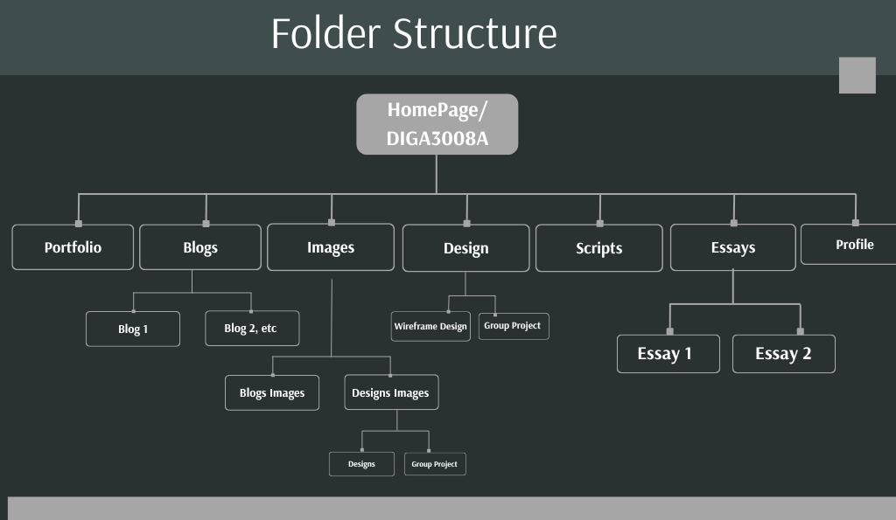
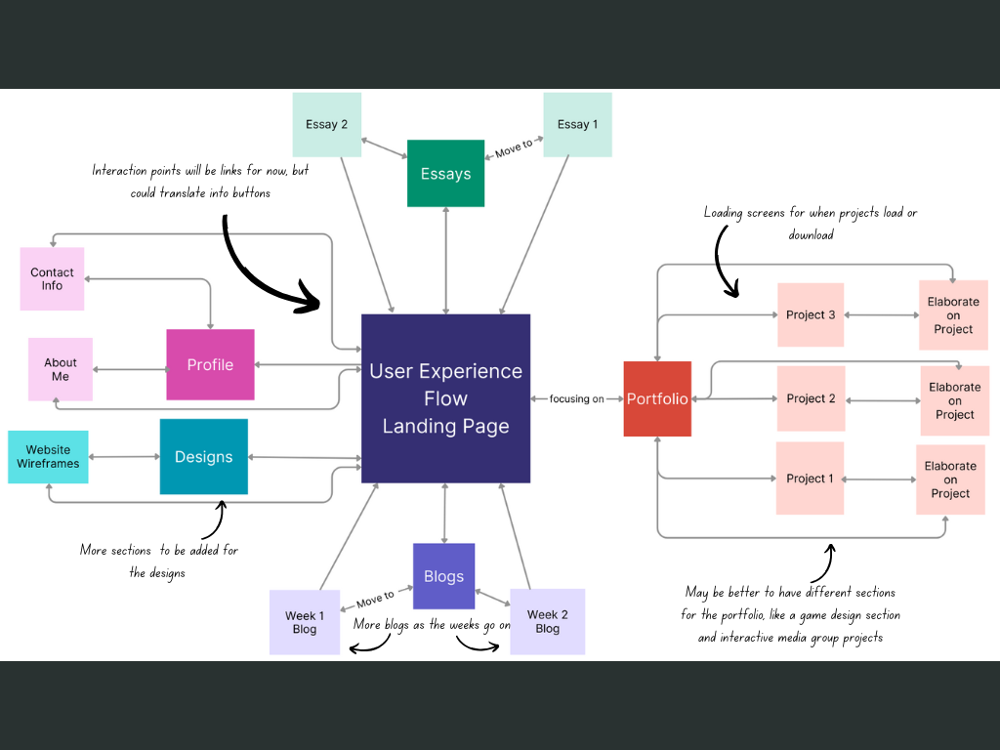

Documentation of IxD Process
Goal Alignment
As stated earlier, the goal of this website is to function as a portfolio that highlights my creativity and accomplishments, as well as skills and projects that I've worked on. Additionally, the website will help me navigate my unique style, branding and aesthetic (Fungies, 2023).The goal is for the users to interact with my work, and explore projects that I've worked on/have been a part of.
The User: As stated, there are two types of users for this website. The lived-in project user, such as lecturers and tutors for this course, and the imaginary user that comes to visit the portfolio. Visitors would entail people such as collaborators, and any industry professionals. The users should be able to interact/see displayed projects and reach out to me. (Moritz Prätorius, 2024)
Information Structure - Content Mapping
Types of content:- Showcasing projects (project summaries, my role, tools/engine used, team size)
- Blogs
- Design process documentation (Showcasing development for certain project, including prototyping, wireframes, visual sketches if any)
- Essays
- Resume and profile (an about me section)
- Contact information (contact info and links to professional profiles such as GitHub)

User Flow - Screens, Behaviour, and Decisions

List and explanation of selected Interface Elements
In order to structure my user interface, I would like to focus on creating an intuitive, visually appealing, and functional design. The input controls would allow users to interact with my portfolio.This includes:
- buttons to switch between pages and click on blog posts
- text fields to search
- The navigational components:
- navigation bar
- links to sections on the website
- footer navigation, such as quick links to GitHub, and contact info
- Scrollbar
- Breadcrumb (letting users see their current location such as which page their on)
- The informational components:
- Project cards will be used for blogs and essays (thumbnail image preview, title and short description, read more button linking to the page of the blog).
- Loaders (something creative to let the user know the system is completing an action in the background)